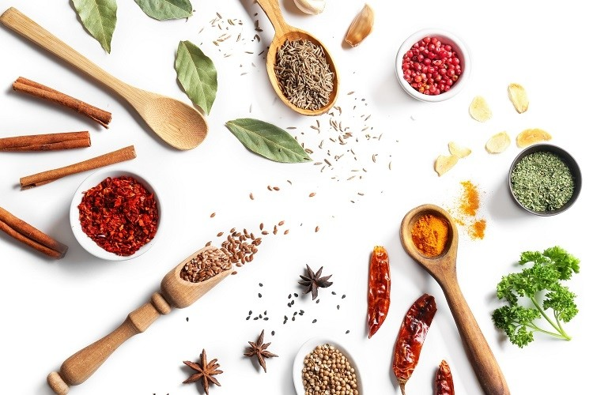

FoodLess
"Saving the world one kitchen at a time!"
MENU
Community Cookbook
Submit a Recipe
About Us
Homepage
Saved Recipes
Saved Recipes
You have no saved recipes! :(
Let's Get Started!
X
List any ingredients you have here (Proteins, vegetables, fruits):

Item 1
Item 2
Item 3